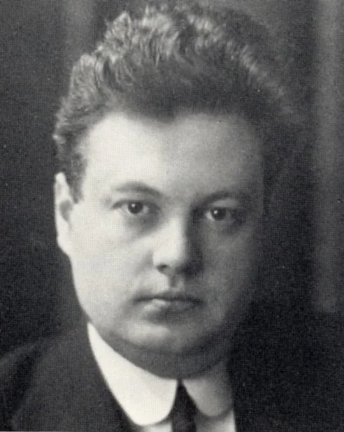
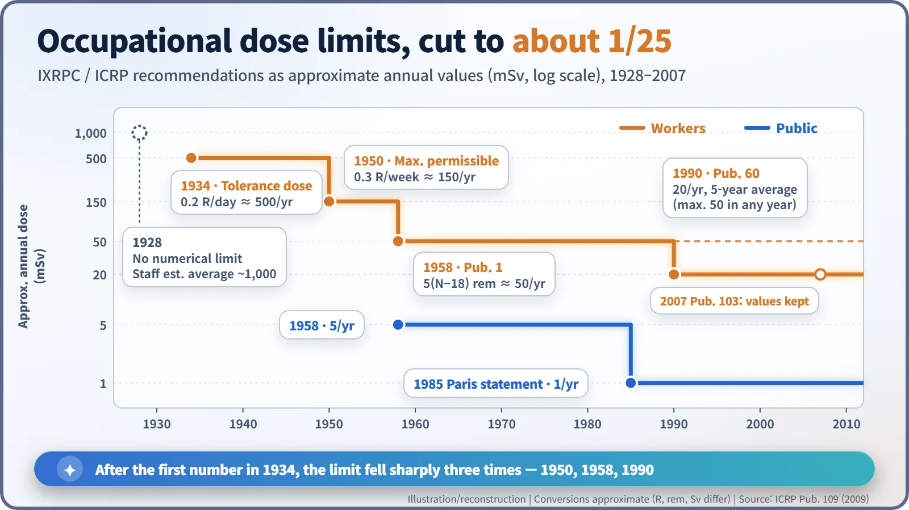
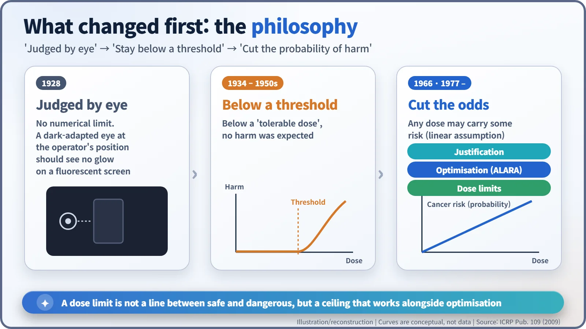

Nuclear History · 231
From a Glowing Screen in the Dark to 1 Millisievert a Year — How the ICRP Set and Reset Radiation Dose Limits
The first rules had no numbers at all; eight decades later the occupational limit stood at about one twenty-fifth of the first figure, and the philosophy behind it had changed completely.
The first international radiation-protection rules, written in 1928, contained no numbers at all: an operator's rested eye should not see a screen glowing in the dark. Over the next eight decades the committee founded that year, today's ICRP, set a "tolerance dose" of about 0.2 röntgen a day, then cut the occupational limit to roughly one twenty-fifth of that value. The bigger change was the philosophy behind the numbers.
A rule measured by the human eye
"An operator should place himself as remote as practicable from the X-ray tube. It should not be possible for a well rested eye of normal acuity to detect in the dark appreciable fluorescence of a screen placed in the permanent position of the operator." That is paragraph 11 of the very first international radiation-protection recommendations, issued in 1928. There is not a single number in it. Instead of a dose limit, the text prescribed long holidays, limited working hours and good shielding. Decades later the Swedish protection expert Bo Lindell (1922–2016) estimated that medical staff of that era probably received around 1,000 millisieverts (mSv) a year on average, roughly fifty times today's occupational limit. [1]
A 32-year-old chairman and a small committee
The recommendations came from a body founded that year at the Second International Congress of Radiology (ICR) in Stockholm: the International X-ray and Radium Protection Committee (IXRPC), the forerunner of today's International Commission on Radiological Protection (ICRP). At the congress, a proposal to adopt the röntgen (R) as the unit of X-ray exposure drew far more attention than the birth of the committee.
As a courtesy to the host country, the chair went to the 32-year-old Swedish physicist Rolf Maximilian Sievert (1896–1966). The real driving force was George Kaye of Britain's National Physical Laboratory. Lauriston S. Taylor (1902–2004) of the U.S. National Bureau of Standards was still in his twenties, and only two members were medical doctors. Before the Second World War the group met for a single day at each congress: Paris 1931, Zürich 1934, Chicago 1937. After the German authorities replaced the Jewish German member with someone else for the 1934 meeting, the Commission adopted rules giving itself full control over its own membership. [1] [4]

The first number: a "tolerance dose"
The first number appeared at the Zürich meeting in July 1934. In the Commission's words, "a person in normal health can tolerate exposure to X rays to an extent of about 0.2 international röntgens (r) per day." Some sources quote the same figure as 1 R per week. In modern terms it corresponds to roughly 500 mSv a year.
The name tells you the thinking behind it: there is a threshold, a level below which no harm occurs, and the job is to stay under it. The effects to be guarded against were the ones that appear for certain after heavy exposure, "injuries to the superficial tissues," "derangements of internal organs and changes in the blood." The 1934 text also required radium and X-ray workers to have blood examinations on entry and at least twice a year. [1]
After the war: a new name and a lower number
The first post-war congress met in London in 1950. Only two IXRPC members had survived the war: Taylor and Sievert. Taylor was asked to revive the body, which took its present name, ICRP. The new standard was a "maximum permissible dose" of 0.3 R per week measured in free air, about 150 mSv a year in today's units. The old figure, the Commission judged, was too "close to the probable threshold for adverse effects." It also "strongly recommended that every effort be made to reduce exposures to all types of ionizing radiation to the lowest possible level."
As worries about fallout from atmospheric weapons tests grew in the 1950s, the ICRP addressed the general public for the first time. Its 1954 recommendations said that "in the case of the prolonged exposure of a large population, the maximum permissible levels should be reduced by a factor of ten." The tenfold gap between workers and the public, still visible today, starts here. [1]
A limit you calculated from your age
The recommendations adopted in September 1958, later known as Publication 1, introduced a striking formula: accumulated dose = 5 × (age − 18) rem, where 1 rem equals 10 mSv. A 30-year-old worker should therefore have received no more than 60 rem in total, an average of 50 mSv a year. For individual members of the public the limit became 5 mSv a year. [1]

From thresholds to probabilities
The bigger change was in the thinking. Publication 9 (1966) stated that "the Commission sees no practical alternative, for the purposes of radiological protection, to assuming a linear relationship between dose and effect." For stochastic effects such as cancer, where the probability of harm rather than its severity rises with dose, the Commission would no longer assume a safe threshold. The debate over that assumption is a long story of its own.
Publication 26 (1977) turned the new approach into three principles: no practice unless it produces a positive net benefit (justification); all exposures kept "as low as reasonably achievable, economic and social factors being taken into account" (optimisation, the origin of ALARA); and individual doses kept below recommended limits. The occupational limit stayed at 50 mSv a year. Two years later, in 1979, the General Conference on Weights and Measures gave the unit of dose Sievert's name.
In the 1980s, revised dosimetry for the Hiroshima and Nagasaki survivors pushed risk estimates up. In its 1985 Paris statement the ICRP cut the public limit to an average of 1 mSv a year. The 1990 Recommendations (Publication 60) set the occupational limit at 20 mSv a year averaged over five years, with no more than 50 mSv in any single year. The 2007 Recommendations (Publication 103) kept those values. [1] [2] [3]

A limit is not a cliff edge
From about 500 mSv a year in 1934 to 20 mSv: roughly a 25-fold reduction. That does not mean radiation became 25 times more dangerous. Better risk estimates played a part, but the larger shift was in philosophy, from avoiding a threshold to managing a probability. A dose limit is not a cliff edge beyond which illness follows. It is the last fence protecting an individual after exposures have already been pushed down by optimisation. The ICRP itself has noted that "many people regarded a limit as being absolute."
The ICRP is not a regulator. It only recommends; national authorities and international safety standards turn its advice into law. Even so, the numbers that today's nuclear workers read off their dosimeters trace back almost entirely to this commission, and to a rule that once asked a rested eye to look for a glow in the dark. [1]